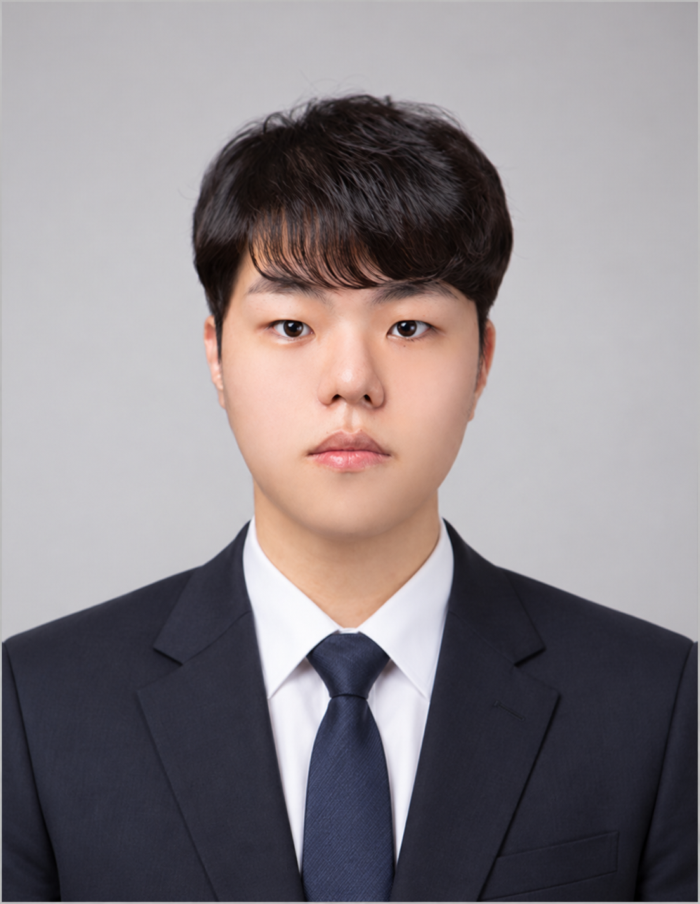

문서 작성
Word, PowerPoint, Excel을 활용해 기획 의도와 데이터를 구조적으로 정리합니다.
System Designer
유저의 입장에서 먼저 생각하는 시스템 기획자 임상진입니다. 플레이 흐름을 검토하고, 팀과 조율하며, 이해하기 쉬운 시스템을 설계합니다.

01 / PROFILE
유저 입장에서 생길 불편함을 미연에 방지하는 시스템 기획자입니다. 플레이어가 게임에 몰입할 수 있을지 끊임없이 검토하며, 팀원과 좋은 분위기에서 협업할 수 있도록 조율자의 역할을 수행합니다.
02 / ARCHIVE
03 / CAPABILITIES
Word, PowerPoint, Excel을 활용해 기획 의도와 데이터를 구조적으로 정리합니다.
소프트웨어융합학 전공을 바탕으로 프로그래밍과 소프트웨어 구조의 기초를 이해합니다.
생성형 AI를 자료 정리와 검증, 프로그램 및 게임 제작에 활용해 기획을 빠르게 구체화합니다.
TOOLS — Jira · Confluence · Notion · Asana · Git · ChatGPT · Claude · Gemini · Excel · PowerPoint · Word · Unity · Figma
04 / APPROACH
시스템에 따라 달라지는 플레이 방식과 경험을 관찰하고, 유저의 입장에서 기획합니다.
예상치 못한 상황에서는 우선순위를 다시 세우고, 역할과 일정을 명확히 공유합니다.
문서와 프로토타입, AI 도구를 활용해 아이디어의 구현 가능성을 빠르게 확인합니다.